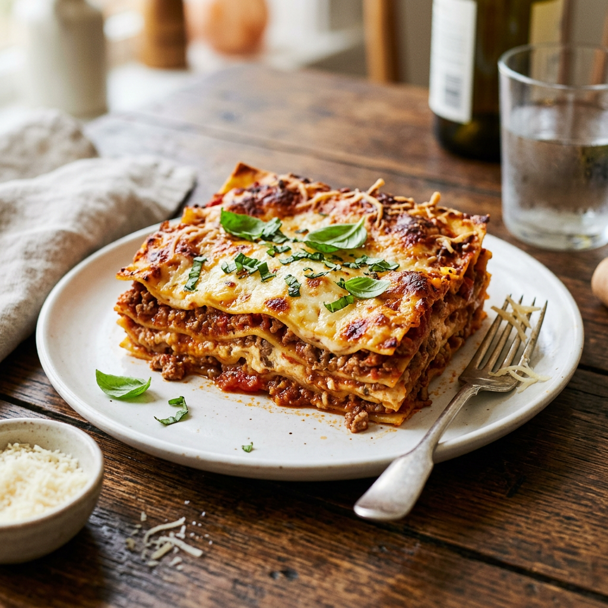

Meaty Lasagna

Description
This is a classic baked lasagna with layers of pasta, rich meat sauce, and plenty of cheese. It is hearty,
comforting, and works well for a family dinner or meal prep.
Ingredients
- 9 lasagna noodles
- 500 g ground beef or mixed beef and sausage
- 1 onion, chopped
- 2 to 3 garlic cloves, minced
- 800 g crushed or copped tomatoes
- 2 to 3 tbsp tomato paste
- 250 g ricotta cheese
- 1 egg
- 2 to 3 cups shredded mozzarella
- 1/2 to 3/4 cup grated Parmesan
- 2 tbsp chopped parsley or basil
- Salt and black pepper to taste
- Olive oil
Steps
- Preheat the oven to 375°F and cook the lasagna noodles until al dente, then drain and cool them so they do
not stick together.
- In a pan, heat a little olive oil and cook the onion, garlic, and meat until browned.
- Add the tomatoes, tomato paste, salt, pepper, and herbs, then simmer the sauce until slightly thickened.
- In a bowl, mix the ricotta with the egg, parsley, and a little Parmesan.
- Spread a little meat sauce in the bottom of a baking dish, add a layer of noodles, then ricotta mixture,
more sauce, and mozzarella. Repeat the layers and finish with sauce and cheese on top.
- Cover with foil and bake, then uncover, add the remaining mozzarella and Parmesan if needed, and bake until
bubbly and golden.
- Let the lasagna rest for 15 to 20 minutes before slicing and serving.
Home